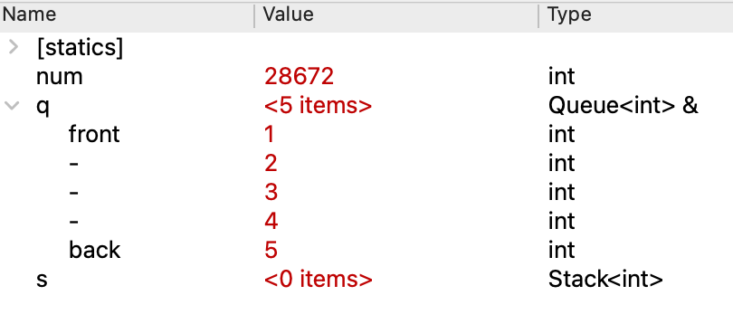

"How I got better at debugging" by Julia Evans
"How I got better at debugging" by Julia Evans
For this course, you will write many C++ programs. But writing the code is only the first step; you also need strong skills in testing and debugging to bring a program to successful completion. Knowing your way around the debugger is key. Our assignments will feature warmup exercises that are designed to give you guided practice with the skills and tools for effective testing and debugging.
This warmup exercise demonstrates use of the debugger and testing on the ADT types. You are to answer the questions posed below by writing your answers in the file short_answer.txt. This file is submitted with your assignment.
1) View ADTs in debugger (manually configure if needed)
Look over the provided code in adtwarmup.cpp that operates on Stacks and Queues. Some of this code is buggy and provided for the purpose of practicing your testing and debugging skills.
The reverse function is implemented correctly and does not have bugs. It uses a Stack to reverse the contents of a Queue. Build and run the program. When prompted, enter the choice to run tests from adtwarmup.cpp. The reverse function should pass its single test case. (Ignore the test failures reported for the other functions, we'll get to those in a bit).
Use the reverse function to practice debugging an ADT. In the file adtwarmup.cpp file, set a breakpoint on the first while loop in reverse. Now run the program in Debug mode. When prompted, select the tests for adtwarmup.cpp. When the debugger stops at your breakpoint, look at the Variables pane in the upper-right of the Qt Creator window.
You should see the variables num, q , and s. Expand the variable q by clicking the triangle to the left of its name. The expanded contents of the Queue should look like this:

IMPORTANT: If the Queue contents in your debugger look very different than the screenshot above, this likely means that your debugger is not configured to properly display variables of Stanford collection type. Stop here and follow the instructions to configure your Qt debugger.
The Queue q was passed as an argument to reverse; its contents were initialized to {1, 2, 3, 4, 5}. The Stack s and integer num are declared as local variables in reverse. Neither of these variables is assigned an initial value.
In the debugger variables pane, s is displayed as a Stack containing <0 items>. A Stack has a "default" initializer that configures a new stack that is not otherwise initialized. The default initializer for Stack makes an empty stack. In fact, all of the Stanford collection classes have a default initializer that creates an empty collection.
Compare that behavior to what you see for the integer variable num. Like s, the variable num was declared without being initialized. Unlike the collection types, the int type does not have a default initializer. This means an int variable is left uninitialized. The debugger shows the "value" for num but that value is only the leftover contents in the memory location where num is being stored. In the screenshot above, the leftover value happened to be 28672, but you may see something different on your system. If your code erroneously tries to use the value of an uninitialized variable, you get an unpredictable result. For now, just file this fact away. If at some later point in debugging, you observe a variable holding a nonsensical value, check to see if the bug is a missing initialization.
Use the Step Over button to single-step through the first iteration of the while loop. After executing the assignment to num, its value now becomes sensible. Stepping the next line pushes that value onto the stack. Expand the Stack s by clicking the triangle to the left of its name. You should now have both the stack and queue expanded. Continue single-stepping through the loop. As you step, keep your eye on the Variables pane and watch how the contents of the stack and queue are changing.
Q1. The display of the Queue in the debugger uses the labels front and back to mark the two ends of the queue. How are the contents labeled when the Queue contains only one element?
You now know how to inspect and interpret ADTs in the debugger. We hope that you will find this a useful skill when working on the rest of the assignment.
2) Test duplicateNegatives
Testing and debugging are closely related. After writing a piece of code, you will want to test it to verify its behavior. If you encounter a problem, you run your test case under the debugger to further diagnose the bug.
The intention of the function duplicateNegatives is to modify a Queue<int> to duplicate each negative number, i.e. turning the queue {3, -5, 10} into {3, -5, -5, 10}. The given code is buggy and does not behave correctly on all inputs.
The provided test cases try inputs containing negative and positive numbers. Run those tests and take note of which tests pass and which do not.
The test results show the function produces an incorrect result for a queue containing a negative value. Your hypothesis is that it is the presence of any negative number that triggers the bug. Before you start on debugging, you want to winnow down to the most minimal case. Thus you decide to try a queue of length one containing a single negative number. Write your own STUDENT_TEST for this case.
Run the tests again. This new case seems to be taking a really, really long time to run. In fact what is happening is that the program is stuck in an infinite loop. A infinite loop is one that never reaches its stopping condition and thus never completes. When a program is stuck an infinite loop, your only recourse is to manually intervene.
Pro tip: how to stop a stuck program
- If not running in Debug mode, you can stop the program by closing the console window or choosing "Quit" from the menu bar. This action forcibly exits the program.
- If running in Debug mode, you can interrupt the program. On debugger tool bar, find button with this icon (hover over to confirm tool tip action is "Interrupt"). Clicking this button will pause program execution and return control to the debugger. (This is same action as choosing "Debug"- > Interrupt" from application main menu). The program state is preserved and can be examined. This will allow you to gather more information to diagnose what's gone wrong.
Our new test case deepens our understanding of the behavior of duplicateNegatives? We believe the function works correctly for non-negative inputs. For inputs containing mixed positive and negative values, the function completes but produces the wrong result. Your new test shows there is also a third category, where some inputs go into an infinite loop.
Precisely identifying what kind of inputs trigger a problem is very helpful, as this will focus the debugging process. You have observed that an input of a single negative number results in an infinite loop. Is there more to the pattern? Could it be specific to where the negative number occurs in the input, such as being the first or last ? Add more student test cases and re-run until you narrow in on the precise trigger for the infinite loop.
Gather the results of your observations and answer the following questions in
short_answer.txt:
Q2. For which type of inputs does the function go into an infinite loop?
Rather than identify one specific input, describe the general characteristics of all such inputs.
3) Debug duplicateNegatives
Now that you've observed the buggy behavior and know what kind of input triggers it, let's use the debugger to diagnose the flaw. (You may have already seen the bug when reading over the code; if so, great! But the purpose of this exercise is to show you a methodology for using the debugger that will help you in later times when you cannot spot the bug just from reading the code.)
Start with your test case that goes into an infinite loop. Set a breakpoint on the call to duplicateNegatives within the test case and run the program in Debug mode.
When the breakpoint is hit, Step Into the call to duplicateNegatives and then use Step Over to single step through a few iterations of the for loop. Expand the variable q to see its contents and pay attention to the changing values for i and q. Trace out what is happening and work through why the loop never reaches its intended termination condition.
Given the above detective work, come up with a fix for the
duplicateNegatives code. Try out your fix and see that it resolves the problem with
the infinite loop inputs. As a followup, re-test the inputs that
terminated but produced incorrect results. You should find they are also working correctly now. In this case, the same underlying flaw was producing two
seemingly unrelated symptoms. Debugger use for the win!
Answer the following question in short_answer.txt:
Q3. Show your edited code for duplicateNegatives that fixes the problem with the infinite loop.
4) Diagnose a test that raises an error
The last part of the warmup is learning how to recognize when a test case fails due to raising an error.
The function sumStack is intended to return the sum of the values in a Stack of integers.
Run the provided test cases. The first test is successful, but the subsequent test goes down in flames due to an error. When an error is raised in the middle of a test, SimpleTest reports it like this:
Test failed due to the program triggering an ErrorException.
This means that the test did not fail because of a call
to EXPECT() or EXPECT_ERROR() failing, but rather because
some code explicitly called the error() function.
When you see this message, it means a fatal error was raised during test which prevented the test from completing. The error was not expected and due to a bug in the code. Sometimes there is additional commentary which further explains the specifics of the error, e.g. index out of bounds, attempt to pop from an empty stack, or modification of a collection while iterating over it.
Use the same debugging process for an error as a failing test case: add a breakpoint inside the test case and step through to see where it goes wrong. If you put a breakpoint inside the test case code before the call to sumStack, your stepping will go through the behind-the-scenes code that sets up for the function call, including make a copy of the stack (the parameter is pass-by-value). This code is a bit goopy, so if instead set breakpoint on the first line of sumStack, this will stop after those function call shenanigans and you can get on to stepping through the operation of sumStack.
There is one added twist to be aware of when stepping through code that has an error — you can step up to, but cannot step through the actual operation that raises an error. When executing the statement in error, a clever bit of C++ "hyperjumps" control to an error-handling routine (or your program may terminate if the error is more catastrophic). You must restart the program and step over until the crash again to get back to the context right before the crash.
Looking at the code and stepping in the debugger, you will see that the bug in sumStack is due to mishandling an empty stack. One possible fix to sumStack would be to add a special case, i.e. inserting this code at the top of the function:
int sumStack(Stack<int> s) {
if (s.isEmpty()) {
return 0;
}
...
However, there is a better fix to the existing code that would make it work correctly for both empty and non-empty stacks, without adding a special case.
Q4. What is the better fix to sumStack that corrects the bug?
That's it for the warmup! Be sure to keep these debugging techniques in mind when you find yourself in a future jam– the debugger is a friend you don't want to be without!